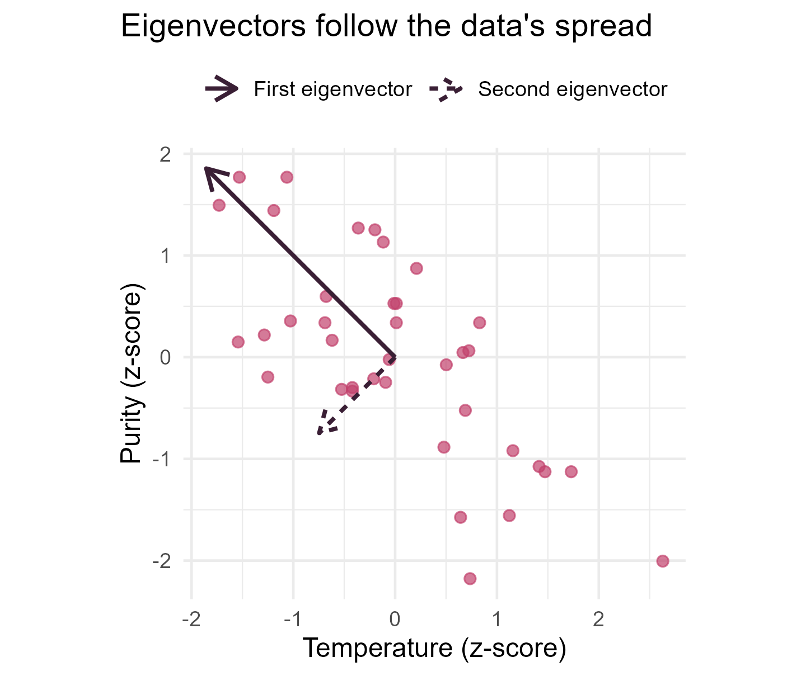

Module 0 · Lesson 14 of 14 Week 14 of 160 About 5–7 hours
Matrices for statistics
The linear algebra behind mass balances, regression and multivariate methods
Create and multiply matrices, transpose and invert them, solve linear systems like mass balances, compute covariance matrices and least-squares coefficients with matrix algebra, and interpret eigenvalues.
A dataset is a table of numbers, and the mathematics of tables of numbers is linear algebra. Chemical engineers use it constantly, often without calling it that: every material balance with several streams is a system of linear equations. Statisticians use it everywhere too. From Module 2 on, regression is written with matrices, and one compact formula gives the best-fitting coefficients for any number of predictors. Module 3 analyzes whole covariance matrices at once, and machine learning in Module 7 is linear algebra almost all the way down. This lesson teaches the matrix operations you’ll need, each with the intuition behind it, all in R.
Last lesson of the module! If matrices feel scary, don’t worry: R does all the arithmetic. Your job is to understand what each operation means, and there’s a picture for almost every one.
In this lesson you’ll:
- create matrices, and tell element-wise arithmetic from matrix multiplication
- use matrix products for recipes and costs
- transpose and invert matrices, and solve mass balances
- compute covariance matrices with matrix algebra
- fit a regression with one formula, (X^\top X)^{-1} X^\top y
- see what eigenvalues and eigenvectors say about data
Vectors and matrices
In linear algebra, a vector is an ordered list of numbers, usually written as a column. A matrix is a rectangular array of numbers with n rows and p columns, called an n \times p matrix. A dataset with n observations of p numerical variables is naturally an n \times p data matrix.
matrix() builds a matrix from a vector. It fills the matrix column by column, unless you say byrow = TRUE:
A <- matrix(1:6, nrow = 2)
A
#> [,1] [,2] [,3]
#> [1,] 1 3 5
#> [2,] 2 4 6
B <- matrix(1:6, nrow = 2, byrow = TRUE)
B
#> [,1] [,2] [,3]
#> [1,] 1 2 3
#> [2,] 4 5 6
dim(A)
#> [1] 2 3You can also glue vectors together as columns with cbind(), or as rows with rbind(), and turn a numeric data frame into a matrix with as.matrix():
cbind(x = c(1, 2, 3), y = c(4, 5, 6))
#> x y
#> [1,] 1 4
#> [2,] 2 5
#> [3,] 3 6
X <- as.matrix(stackloss[1:4, ])
X
#> Air.Flow Water.Temp Acid.Conc. stack.loss
#> 1 80 27 89 42
#> 2 80 27 88 37
#> 3 75 25 90 37
#> 4 62 24 87 28Indexing works just like for data frames: A[i, j] is the element in row i and column j, A[1, ] is the first row, and A[, 2] is the second column. A matrix holds a single type, usually numbers, which is what makes fast arithmetic on it possible.
Ordinary arithmetic operators work element by element, exactly as with vectors:
A + 10
#> [,1] [,2] [,3]
#> [1,] 11 13 15
#> [2,] 12 14 16
A * A
#> [,1] [,2] [,3]
#> [1,] 1 9 25
#> [2,] 4 16 36Your turn. Create the 3 \times 3 matrix with the numbers 1 to 9 filled in row by row, so the first row is 1, 2, 3.
matrix(1:9, nrow = 3, ...), and tell it to fill by rows.
matrix(1:9, nrow = 3, byrow = TRUE)Matrix multiplication
The dot product of two vectors of the same length multiplies them element by element and adds up the results: x \cdot y = \sum_i x_i y_i. You’ve computed dot products already: the expected value \sum x\,p(x) in Lesson 9 is the dot product of the values and their probabilities.
The matrix product AB is built from dot products: the element in row i and column j of AB is the dot product of row i of A with column j of B. So the number of columns of A must equal the number of rows of B, and an n \times k matrix times a k \times p matrix gives an n \times p matrix. In R, matrix multiplication is %*%. A plain * is not matrix multiplication!
\begin{pmatrix} 1 & 2 \\ 3 & 4 \end{pmatrix} \begin{pmatrix} 5 & 6 \\ 7 & 8 \end{pmatrix} = \begin{pmatrix} 1\cdot5 + 2\cdot7 & 1\cdot6 + 2\cdot8 \\ 3\cdot5 + 4\cdot7 & 3\cdot6 + 4\cdot8 \end{pmatrix} = \begin{pmatrix} 19 & 22 \\ 43 & 50 \end{pmatrix}
P <- matrix(c(1, 2, 3, 4), nrow = 2, byrow = TRUE)
Q <- matrix(c(5, 6, 7, 8), nrow = 2, byrow = TRUE)
P %*% Q
#> [,1] [,2]
#> [1,] 19 22
#> [2,] 43 50
Q %*% P
#> [,1] [,2]
#> [1,] 23 34
#> [2,] 31 46Unlike ordinary multiplication, the order matters: PQ and QP are usually different.
Recipes and costs
A matrix times a vector is especially useful. A plant makes three products from three raw materials. The recipe matrix says how many kilograms of each raw material go into one tonne of each product, and the price vector gives each raw material’s price per kilogram. One multiplication gives the raw-material cost of every product:
recipe <- matrix(c(500, 300, 200,
200, 600, 200,
100, 100, 800), nrow = 3, byrow = TRUE,
dimnames = list(c("P1", "P2", "P3"), c("M1", "M2", "M3")))
prices <- c(1.20, 0.80, 2.50) # dollars per kg of M1, M2, M3
recipe %*% prices
#> [,1]
#> P1 1340
#> P2 1220
#> P3 2200Each cost is 500 \times 1.20 + 300 \times 0.80 + 200 \times 2.50, and so on: a linear combination of the prices. Regression predictions in Module 2 are computed in exactly the same way.
Your turn. Compute AB for these two matrices.
Matrix multiplication in R is %*%. A single * multiplies element by element.
A <- matrix(c(2, 0, 1, 3), nrow = 2, byrow = TRUE)
B <- matrix(c(1, 4, 2, 5), nrow = 2, byrow = TRUE)
A %*% BYour turn. Raw-material prices change: M1 now costs 1.50 dollars per kg, M2 still 0.80 and M3 drops to 2.00. Compute the new cost of each product with one multiplication.
The prices are a vector in the same order as the columns: M1, M2, M3.
recipe <- matrix(c(500, 300, 200,
200, 600, 200,
100, 100, 800), nrow = 3, byrow = TRUE)
prices <- c(1.50, 0.80, 2.00)
recipe %*% pricesP1 gets more expensive (1,390 dollars a tonne), while P2 and P3 get cheaper, especially P3, which uses lots of M3.
Transpose, identity and symmetric matrices
The transpose A^\top swaps rows and columns, so an n \times p matrix becomes p \times n. In R, it’s t():
t(A)
#> [,1] [,2]
#> [1,] 1 2
#> [2,] 3 4
#> [3,] 5 6A useful rule: (AB)^\top = B^\top A^\top, with the order reversed.
A square matrix has as many rows as columns. The identity matrix I has 1s on its diagonal and 0s everywhere else, and it plays the role of the number 1: IA = AI = A. diag(n) creates an n \times n identity, and diag(c(...)) makes a matrix with the given numbers on its diagonal.
diag(3)
#> [,1] [,2] [,3]
#> [1,] 1 0 0
#> [2,] 0 1 0
#> [3,] 0 0 1A matrix is symmetric if A^\top = A. Covariance and correlation matrices are symmetric, and so is X^\top X for any matrix X. That product appears so often in statistics that R has a shortcut for it: crossprod(X).
Inverses and determinants
The inverse of a square matrix A is the matrix A^{-1} with AA^{-1} = A^{-1}A = I, just like 1/a for a number. solve(A) computes it:
M <- matrix(c(4, 7, 2, 6), nrow = 2, byrow = TRUE)
M_inv <- solve(M)
M_inv
#> [,1] [,2]
#> [1,] 0.6 -0.7
#> [2,] -0.2 0.4
M %*% M_inv
#> [,1] [,2]
#> [1,] 1 0
#> [2,] 0 1The product is the identity, up to tiny floating-point errors. To check a result like this, use all.equal(M %*% M_inv, diag(2)) rather than ==.
Not every square matrix has an inverse, just as 0 has no reciprocal. A matrix with no inverse is called singular, and the determinant tells you which matrices those are. For a 2 \times 2 matrix,
\det \begin{pmatrix} a & b \\ c & d \end{pmatrix} = ad - bc ,
and in general det() computes it. A matrix is singular exactly when its determinant is 0, which happens when one column is a combination of the others:
det(M)
#> [1] 10
S <- matrix(c(1, 2, 2, 4), nrow = 2, byrow = TRUE) # the second column is twice the first
det(S)
#> [1] 0solve(S) would stop with an error saying the matrix is singular. In statistics, this happens when one predictor is an exact combination of others, like having the temperature in both °C and kelvin in the same model. Module 2’s lesson on multicollinearity deals with the trickier case, where predictors are nearly combinations of each other.
Your turn. Compute the inverse of M = \begin{pmatrix} 4 & 7 \\ 2 & 6 \end{pmatrix}.
With a single argument, solve() returns the inverse.
M <- matrix(c(4, 7, 2, 6), nrow = 2, byrow = TRUE)
solve(M)For a 2 \times 2 matrix, the inverse is \frac{1}{ad - bc}\begin{pmatrix} d & -b \\ -c & a \end{pmatrix}, here \frac{1}{10}\begin{pmatrix} 6 & -7 \\ -2 & 4 \end{pmatrix}.
Your turn. The second column of S is three times the first. Return its determinant, and think about what that means for solve(S).
det(S)
S <- matrix(c(2, 6,
1, 3), nrow = 2, byrow = TRUE)
det(S)The determinant is 0, so S is singular and has no inverse: solve(S) gives an error.
Solving mass balances
Here’s where linear algebra meets your engineering classes. Two streams are mixed: stream A is 10% ethanol, and stream B is 50% ethanol. You need 100 kg of a 20% ethanol mixture. How much of each stream should you use? Write a mass balance for the total and one for the ethanol:
\begin{aligned} a + b &= 100 \\ 0.10\,a + 0.50\,b &= 20 \end{aligned} \qquad\text{or}\qquad \begin{pmatrix} 1 & 1 \\ 0.10 & 0.50 \end{pmatrix} \begin{pmatrix} a \\ b \end{pmatrix} = \begin{pmatrix} 100 \\ 20 \end{pmatrix} ,
that is, A\mathbf{v} = \mathbf{b}, with solution \mathbf{v} = A^{-1}\mathbf{b}. Give solve() both A and \mathbf{b}:
A2 <- matrix(c(1, 1,
0.10, 0.50), nrow = 2, byrow = TRUE)
b <- c(100, 20)
solve(A2, b)
#> [1] 75 2575 kg of stream A and 25 kg of stream B. solve(A, b) is faster and more accurate than computing the inverse first and then multiplying, solve(A) %*% b, so prefer it. And the same one line works for 3 streams, or 30.
Your turn: a three-stream blend. Three streams contain ethanol, water and methanol in these mass fractions:
| Stream 1 | Stream 2 | Stream 3 | |
|---|---|---|---|
| Ethanol | 0.6 | 0.2 | 0.0 |
| Water | 0.4 | 0.5 | 0.3 |
| Methanol | 0.0 | 0.3 | 0.7 |
You need a blend containing 30 kg of ethanol, 40 kg of water and 30 kg of methanol. How many kilograms of each stream should you use?
Each row of A is one component’s balance, so \mathbf{b} holds the kilograms of each component you need, in the same order: ethanol, water, methanol.
A <- matrix(c(0.6, 0.2, 0.0,
0.4, 0.5, 0.3,
0.0, 0.3, 0.7), nrow = 3, byrow = TRUE)
b <- c(30, 40, 30)
solve(A, b)40 kg of stream 1, and 30 kg each of streams 2 and 3. Check the ethanol: 0.6 \times 40 + 0.2 \times 30 = 30. ✓
Statistics with matrices
Let X be an n \times p data matrix. Its mean vector holds the mean of each column:
X <- as.matrix(stackloss)
colMeans(X)
#> Air.Flow Water.Temp Acid.Conc. stack.loss
#> 60.42857 21.09524 86.28571 17.52381Centering subtracts each column’s mean from that column. The covariance matrix is then
S = \frac{1}{n-1}\, X_c^\top X_c ,
where X_c is the centered data. Its diagonal holds each variable’s variance, and the off-diagonal entries are the covariances between pairs of variables: positive when two variables tend to be above their means together, negative when one tends to be above while the other is below. Divide each covariance by the two standard deviations, and you get the correlations from Lesson 7.
Xc <- scale(X, center = TRUE, scale = FALSE) # subtract each column's mean
S <- crossprod(Xc) / (nrow(X) - 1)
round(S, 2)
#> Air.Flow Water.Temp Acid.Conc. stack.loss
#> Air.Flow 84.06 22.66 24.57 85.76
#> Water.Temp 22.66 9.99 6.62 28.15
#> Acid.Conc. 24.57 6.62 28.71 21.79
#> stack.loss 85.76 28.15 21.79 103.46
all.equal(S, cov(X), check.attributes = FALSE)
#> [1] TRUE
round(cov2cor(S), 2)
#> Air.Flow Water.Temp Acid.Conc. stack.loss
#> Air.Flow 1.00 0.78 0.50 0.92
#> Water.Temp 0.78 1.00 0.39 0.88
#> Acid.Conc. 0.50 0.39 1.00 0.40
#> stack.loss 0.92 0.88 0.40 1.00The covariance matrix sums up how a whole set of variables varies and moves together. Here, the stack loss is strongly related to both the air flow (0.92) and the cooling-water temperature (0.88). Module 3 is largely about analyzing matrices like this one.
Your turn. Compute the covariance matrix of the batches’ temperature, residence time and yield from the formula X_c^\top X_c / (n - 1), without cov(). (The batches with a missing temperature are removed for you.)
t(Xc) %*% Xc (or crossprod(Xc)), divided by nrow(X) - 1.
X <- as.matrix(na.omit(batches[, c("temp_C", "residence_min", "yield_pct")]))
Xc <- scale(X, center = TRUE, scale = FALSE)
crossprod(Xc) / (nrow(X) - 1)Regression in one formula
Here’s a preview of Module 2. To predict the stack loss from the air flow, regression finds the line \widehat{\text{loss}} = b_0 + b_1 \cdot \text{air flow} that minimizes the sum of squared prediction errors: the least-squares idea from Lesson 7. Put a column of 1s (for the intercept) next to the predictor to form the design matrix X, and the least-squares coefficients are
\mathbf{b} = (X^\top X)^{-1} X^\top \mathbf{y} .
y <- stackloss$stack.loss
X <- cbind(intercept = 1, air_flow = stackloss$Air.Flow)
solve(crossprod(X), crossprod(X, y)) # (X'X)^(-1) X'y, computed by solving
#> [,1]
#> intercept -44.132025
#> air_flow 1.020309
coef(lm(stack.loss ~ Air.Flow, data = stackloss))
#> (Intercept) Air.Flow
#> -44.132025 1.020309The two agree: each extra unit of air flow adds about 1 unit of stack loss. crossprod(X, y) computes X^\top y, and solving the system X^\top X\,\mathbf{b} = X^\top y avoids computing the inverse explicitly. The same formula handles any number of predictors: you just add columns to X.
NoteGo deeper: where the formula comes from
The sum of squared errors is f(\mathbf{b}) = (\mathbf{y} - X\mathbf{b})^\top(\mathbf{y} - X\mathbf{b}). Expanding it gives \mathbf{y}^\top\mathbf{y} - 2\mathbf{b}^\top X^\top\mathbf{y} + \mathbf{b}^\top X^\top X \mathbf{b}. Set its gradient (the vector of partial derivatives) to zero, just as you’d set a derivative to zero in one variable:
\nabla f(\mathbf{b}) = -2X^\top\mathbf{y} + 2X^\top X\mathbf{b} = \mathbf{0} \quad\Longrightarrow\quad X^\top X\,\mathbf{b} = X^\top\mathbf{y} .
These are the normal equations. When X^\top X is invertible, which needs no predictor to be an exact combination of the others, the unique solution is \mathbf{b} = (X^\top X)^{-1}X^\top\mathbf{y}. With a single predictor and an intercept, it reduces to formulas involving the means, standard deviations and correlation, as Lesson 2.2 shows.
Your turn. Compute the least-squares coefficients for predicting the stack loss from the cooling-water temperature, Water.Temp, with the normal equations.
solve(crossprod(X), crossprod(X, y)). (Or the long way: solve(t(X) %*% X) %*% t(X) %*% y.)
y <- stackloss$stack.loss
X <- cbind(1, stackloss$Water.Temp)
solve(crossprod(X), crossprod(X, y))Compare with coef(lm(stack.loss ~ Water.Temp, data = stackloss)). Each degree warmer cooling water adds about 2.8 units of stack loss: warm water cools the absorption tower less well.
Eigenvalues and eigenvectors
Multiplying a vector by a square matrix usually changes its direction. But for special vectors, called eigenvectors, the matrix only stretches or shrinks them:
A\mathbf{v} = \lambda\mathbf{v} .
The stretch factor \lambda is the matching eigenvalue. eigen() finds both:
E <- eigen(M)
E$values
#> [1] 8.872983 1.127017
E$vectors
#> [,1] [,2]
#> [1,] -0.8207173 -0.9251135
#> [2,] -0.5713345 0.3796908
M %*% E$vectors[, 1]
#> [,1]
#> [1,] -7.282211
#> [2,] -5.069442
E$values[1] * E$vectors[, 1]
#> [1] -7.282211 -5.069442The last two lines are equal: multiplying the first eigenvector by M just scales it by the first eigenvalue.
For a covariance or correlation matrix, eigenvectors have a beautiful meaning: they point in the directions in which the data spread out most, and each eigenvalue is the variance of the data in its direction. Here’s the temperature–purity trade-off from our batches, with both variables standardized to z-scores:
tp <- na.omit(batches[, c("temp_C", "purity_pct")])
Z <- scale(tp)
R <- cor(tp)
R
#> temp_C purity_pct
#> temp_C 1.0000000 -0.7217229
#> purity_pct -0.7217229 1.0000000
eig <- eigen(R)
eig$values
#> [1] 1.7217229 0.2782771
eig$vectors
#> [,1] [,2]
#> [1,] -0.7071068 -0.7071068
#> [2,] 0.7071068 -0.7071068Show the code
arrows_df <- data.frame(xend = eig$vectors[1, ] * 2 * sqrt(eig$values),
yend = eig$vectors[2, ] * 2 * sqrt(eig$values),
which = c("First eigenvector", "Second eigenvector"))
ggplot(as.data.frame(Z), aes(x = temp_C, y = purity_pct)) +
geom_point(color = "#C2416C", size = 2, alpha = 0.7) +
geom_segment(data = arrows_df, aes(x = 0, y = 0, xend = xend, yend = yend, linetype = which),
arrow = arrow(length = grid::unit(0.15, "inches")), linewidth = 0.9, color = "#3A1F35") +
coord_equal() +
labs(title = "Eigenvectors follow the data's spread",
x = "Temperature (z-score)", y = "Purity (z-score)", linetype = NULL) +
theme_minimal(base_size = 12) +
theme(legend.position = "top", plot.title.position = "plot")
The first eigenvector points along the long axis of the cloud of points: hotter and less pure, or cooler and purer. That’s the trade-off itself! Its eigenvalue, 1.72, says the data vary a lot in that direction. The second eigenvector points across the cloud, where there’s little variation (0.28). For a 2 \times 2 correlation matrix with correlation r, the eigenvalues are always 1 + |r| and 1 - |r|. Their sum, 2, equals the sum of the variances on the diagonal: the eigenvalues split the total variance among the directions. Turning many correlated variables into a few such directions is principal components analysis, in Module 7.
Your turn. Compute the eigenvalues of the correlation matrix of the air flow and the stack loss. Check that they add up to 2.
eigen(R)$values
R <- cor(stackloss[, c("Air.Flow", "stack.loss")])
eigen(R)$valuesThey’re 1 + r and 1 - r, with r \approx 0.92: almost all the variation lies along a single direction.
Challenge round
Challenge 1 · Two predictors. Predict the stack loss from both the air flow and the cooling-water temperature. Build the design matrix, and compute the coefficients with the normal equations.
The design matrix needs three columns: a column of 1s, then stackloss$Air.Flow, then stackloss$Water.Temp. Use cbind().
y <- stackloss$stack.loss
X <- cbind(1, stackloss$Air.Flow, stackloss$Water.Temp)
solve(crossprod(X), crossprod(X, y))With both predictors in the model, the air-flow coefficient shrinks from 1.02 to about 0.67, and the water-temperature one from 2.82 to about 1.30. That’s because the two predictors are correlated: the plant tends to run harder on days with warmer cooling water, so each one was partly taking credit for the other. Lesson 2.5 explains this “holding the other variables fixed” interpretation.
Challenge 2 · The enthalpy of vaporization. In Lesson 5 you saw that \ln P against 1/T is a straight line for mercury, with slope -\Delta H_{\text{vap}}/R. Now fit that line with the normal equations, and turn the slope into \Delta H_{\text{vap}} in kJ/mol.
b is the solution of the normal equations, exactly as in Challenge 1: solve(crossprod(X), crossprod(X, y)).
y <- log(pressure$pressure)
X <- cbind(1, 1 / (pressure$temperature + 273.15))
b <- solve(crossprod(X), crossprod(X, y))
-b[2] * 8.314 / 1000About 60.7 kJ/mol, close to the textbook 59 kJ/mol for mercury. You just measured a thermodynamic property with linear algebra!
Quick quiz
1. A is 2 \times 3 and B is 3 \times 4. What are the dimensions of AB?
The inner dimensions (3 and 3) must match, and the result takes the outer ones: 2 rows and 4 columns.
2. What’s the difference between A * B and A %*% B in R?
* needs matrices of the same size and multiplies matching elements. %*% combines rows with columns.
3. Which matrix has no inverse?
A determinant of 0 means the matrix is singular: some column is a combination of the others.
4. What does solve(A, b) compute?
It solves the linear system, like a mass balance. That’s the same as A^{-1}\mathbf{b}, but faster and more accurate.
5. What’s on the diagonal of a covariance matrix?
The covariance of a variable with itself is its variance. In a correlation matrix, the diagonal is all 1s.
6. What do the eigenvalues of a covariance matrix represent?
Eigenvectors point along the directions of spread, and the eigenvalues measure the variance in each. Together they add up to the total variance.
Wrap-up
That’s Module 0 done. You’ve built the whole foundation! Here’s what you can do with matrices now:
- Build and combine matrices with
matrix(),cbind()andrbind().+,-,*and/work element by element. - Multiply:
%*%combines rows with columns, needs matching inner dimensions, and depends on the order. A matrix times a vector is a set of linear combinations, like recipe costs. - Transpose and invert:
t()transposes,diag(n)is the identity,solve(A)inverts, and a determinant of 0 means there’s no inverse. - Solve systems:
solve(A, b)solves A\mathbf{v} = \mathbf{b}, from a two-stream mix to any mass balance. - Summarize data: the covariance matrix is X_c^\top X_c/(n-1), with variances on the diagonal.
- Fit regressions: least-squares coefficients solve the normal equations, \mathbf{b} = (X^\top X)^{-1}X^\top\mathbf{y}.
- Find directions: eigenvectors of a covariance matrix point along the greatest spread, and eigenvalues are the variances in those directions.
TipPractice in RStudio (optional, about an hour)
Work in week14.R.
- Check the rules. With two random 3 \times 3 matrices,
matrix(rnorm(9), 3), verify withall.equal()that (AB)^\top = B^\top A^\top and (AB)^{-1} = B^{-1}A^{-1}, and that AB \ne BA. - Regression for the batches. Using the batches with complete data, build the design matrix for predicting
yield_pctfromtemp_C,residence_minandalarms. Compute the coefficients with the normal equations, and compare them withlm(yield_pct ~ temp_C + residence_min + alarms, data = ...). - Covariance and correlation. Compute the covariance and correlation matrices of the batches’ numerical columns. Which pair has the strongest relationship? Why is the covariance matrix harder to read than the correlation matrix?
- Eigen-decomposition. Compute the eigenvalues of the correlation matrix of
stackloss. What fraction of the total (which is 4) does the largest eigenvalue capture? Look at its eigenvector: which variables does it weight most heavily? - Watch the intuition. Watch chapters 1–4 and 14 of 3Blue1Brown’s Essence of Linear Algebra (link below), about an hour in total. They show what matrix multiplication and eigenvectors look like geometrically.
NoteKey words from this lesson
- Matrix
- A rectangular array of numbers with a given number of rows and columns.
- Matrix multiplication
- The product AB, whose elements are dot products of the rows of A with the columns of B.
- Transpose
- The matrix A^\top you get by swapping rows and columns.
- Identity matrix
- A square matrix with 1s on the diagonal and 0s elsewhere, written I.
- Inverse
- The matrix A^{-1} with AA^{-1} = I. Only nonsingular square matrices have one.
- Determinant
- A number computed from a square matrix, which is zero exactly when the matrix is singular.
- Covariance matrix
- A symmetric matrix of the variances and covariances of a set of variables.
- Design matrix
- In regression, the matrix whose columns are a column of 1s and the predictors.
- Eigenvector and eigenvalue
- A vector that a matrix only stretches, A\mathbf{v} = \lambda\mathbf{v}, and its stretch factor \lambda.
NoteWant to read more?
- 3Blue1Brown, Essence of Linear Algebra. Short, beautifully animated videos that build geometric intuition for everything in this lesson.
- Boyd and Vandenberghe, Introduction to Applied Linear Algebra (free PDF). Vectors, matrices and least squares, aimed at applications in data science.